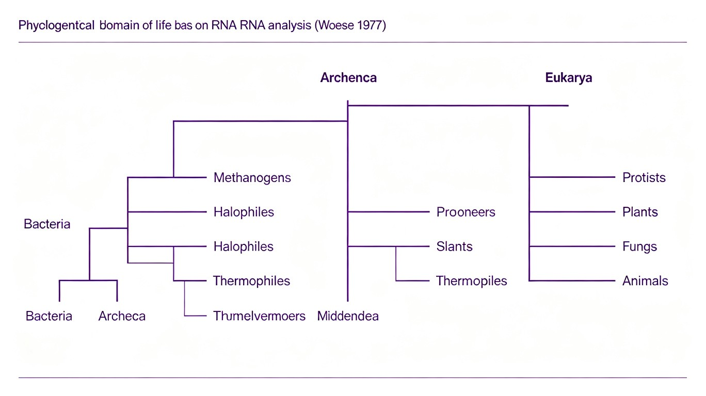

第三节 分子进化与系统发育（Molecular Evolution & Phylogenetics）
分子进化研究DNA、RNA和蛋白质序列随时间的变化规律。系统发育（phylogenetics）研究物种之间的进化关系，通过构建系统发育树（phylogenetic tree）来可视化进化历史。分子进化与系统发育是现代进化生物学的两大支柱，共同构成了"分子系统发育学"（molecular phylogenetics）这一交叉学科。

一、分子钟（Molecular Clock）
分子钟（Molecular Clock）概念由Zuckerkandl & Pauling（1962, 1965）在研究血红蛋白时首次提出。他们发现不同物种中同一种蛋白质的氨基酸替换率大致恒定，可以像时钟一样用来估算物种分化时间。分子钟是中性理论（Kimura 1968）的直接推论——如果大多数分子变化是选择上中性的，那么替换率应该等于突变率（μ），而非受选择强度影响。
分子钟的关键概念：
- 同义替换率（Ks/synonymous substitution rate）：不改变氨基酸的核苷酸替换率。由于同义替换不改变蛋白质序列，它们在大多数情况下是选择上中性的，因此Ks≈μ（突变率）。
- 非同义替换率（Ka/nonsynonymous substitution rate）：改变氨基酸的核苷酸替换率。非同义替换受选择约束——大多数有害突变被清除（纯化选择），少数有利突变被固定（正选择）。因此Ka通常
- Ka/Ks比（ω）的进化意义：ω = Ka/Ks。ω < 1：纯化选择（purifying selection）——非同义替换被抑制，大多数蛋白质编码基因的情况。ω = 1：中性进化——非同义替换以同义替换相同速率固定。ω > 1：正选择（positive selection/directional selection）——非同义替换被促进，是适应性进化的分子信号。ω >> 1的基因通常是快速进化的免疫相关基因（如MHC基因、抗原基因）和生殖相关基因。
二、同源基因（Homologous Genes）
同源基因（homologous genes）是源自共同祖先的基因序列。根据同源关系的不同机制，分为：
- 直系同源（orthologs）：由物种分化（speciation）产生的同源基因。如人类β-珠蛋白和小鼠β-珠蛋白。直系同源基因通常保留相似的生物学功能，是构建物种系统发育树的最佳分子标记。
- 旁系同源（paralogs）：由基因复制（gene duplication）产生的同源基因。如人类α-珠蛋白和β-珠蛋白（由一个祖先珠蛋白基因复制而来）。旁系同源基因可能分化出不同的功能（neofunctionalization）或其中一份退化（pseudogenization）。
- 外源同源（xenologs）：由水平基因转移（horizontal gene transfer, HGT）获得的同源基因。在原核生物中极为常见（如抗生素抗性基因的传播），真核生物中较少见但确实存在（如某些真菌从细菌获得基因）。
区分直系同源和旁系同源的重要性：在构建系统发育树时，只能使用直系同源基因（因为旁系同源基因的进化历史反映的是基因复制事件而非物种分化事件）。如果误用旁系同源基因建树，将得到错误的物种树（基因树≠物种树）。
三、系统发育树构建方法
系统发育树（phylogenetic tree）是表示物种之间进化关系的树状图。Haeckel（1866）绘制了第一棵"生命之树"（Tree of Life）。现代系统发育树基于DNA和蛋白质序列数据，使用多种计算方法构建。
五种主要建树方法：
- 距离法（Distance Methods）：计算序列间的遗传距离，然后基于距离矩阵构建树。UPGMA（Unweighted Pair Group Method with Arithmetic Mean，非加权组平均法）：假设所有谱系进化速率相同（分子钟假设），是最简单的方法。NJ（Neighbor-Joining，邻接法）：Saitou & Nei（1987）提出，不假设分子钟，是目前最常用的距离法。NJ方法计算速度快，适合大规模数据分析。
- 最大简约法（Maximum Parsimony, MP）：寻找需要最少进化步骤（突变数最少）的树。MP基于奥卡姆剃刀原则（最简单的解释最可能正确）。MP的局限：当进化速率较快时，容易受到"长枝吸引"（long-branch attraction, LBA）影响——两个快速进化（长枝）的谱系因为同源异形（homoplasy）而被错误地聚在一起。Felsenstein（1978）首次描述了长枝吸引问题。
- 最大似然法（Maximum Likelihood, ML）：Felsenstein（1981）引入。在给定的进化模型下，寻找使观测数据出现概率最大的树。ML需要指定核苷酸替换模型（如JC69、K80、HKY85、GTR等）。ML计算量大，但对复杂进化模式的处理能力更强。
- 贝叶斯法（Bayesian Inference, BI）：基于贝叶斯定理，结合先验概率和似然函数计算后验概率。以MrBayes（Huelsenbeck & Ronquist 2001）和BEAST（Drummond et al. 2002）为代表软件。BI可以同时估计树拓扑结构、分支长度和进化参数。
| 方法 | 原理 | 分子钟假设 | 速度 | 准确度 | 局限 |
|---|---|---|---|---|---|
| UPGMA | 平均距离聚类 | 是 | 最快 | 低 | 假设太强，不实用 |
| NJ | 最小进化 | 否 | 快 | 中 | 距离矩阵丢失信息 |
| MP | 最少突变步骤 | 否 | 中 | 中 | 长枝吸引 |
| ML | 最大似然 | 可松弛 | 慢 | 高 | 计算量大，需指定模型 |
| BI | 贝叶斯推理 | 可松弛 | 慢 | 最高 | 先验概率选择敏感 |
四、有根树（Rooted Tree）与无根树（Unrooted Tree）
有根树（rooted tree）：有根的系统发育树，明确指示了进化的方向（从根到叶）。根代表了所有研究分类群的最近共同祖先（MRCA, Most Recent Common Ancestor）。无根树（unrooted tree）：没有根的系统发育树，只显示分类群之间的相对关系，不指示进化方向。大多数建树方法（NJ、MP、ML、BI）默认产生无根树。
确定根的方法——外群法（outgroup method）：选择一个与内群（ingroup，研究的目标分类群）有一定亲缘关系但明确不属于内群的物种作为外群（outgroup）。外群应比内群中任何两个物种之间的关系更远。根放置在外群与内群之间。如研究哺乳动物，可用爬行动物或鸟类作为外群。外群的选择至关重要——外群太远导致信号饱和，外群太近可能误将外群置于内群之内。
五、Bootstrap检验（自举检验）
Bootstrap检验由Felsenstein（1985）引入系统发育学，用于评估系统发育树各分支的可靠性（统计支持度）。Bootstrap是系统发育学中最常用的统计检验方法。
- Bootstrap原理：①从原始数据（序列比对）中随机有放回地抽取列（位点），生成与原始数据大小相同的伪复制数据集（pseudoreplicate）；②用每个伪复制数据集构建一棵树；③重复上述过程（通常1000次）；④统计每个分支在所有树中出现的频率，即Bootstrap支持度（Bootstrap support value）。
- Bootstrap值的解释：Bootstrap值表示该分支在抽样误差下的稳健性。通常的解释：≥95%表示强支持，≥70%表示中等支持，<50%表示弱支持或不支持。但Bootstrap值不是严格的"置信度"——Felsenstein（1985）明确指出Bootstrap值不能直接解释为"该分支为真的概率"。
- 贝叶斯后验概率（Posterior Probability, PP）：贝叶斯方法直接给出每个分支的后验概率，通常比Bootstrap值更高。PP>0.95通常被认为是强支持。
六、人类演化（Human Evolution）
人类演化是进化生物学中最引人入胜的研究领域之一。人类与黑猩猩（Pan troglodytes）和倭黑猩猩（Pan paniscus）是现存最近的亲属，三者在约6-7百万年前（Ma）分化。人类谱系（hominin lineage）的关键特征：直立行走（bipedalism）是最早出现的关键特征（脑容量增大是后来才出现的）。
人类演化的关键阶段：
- 南方古猿阿法种（Australopithecus afarensis）——"Lucy"（1974年由Donald Johanson在埃塞俄比亚发现，约3.2 Ma）。脑容量约400-500 cc（接近现代黑猩猩），但已能直立行走（骨盆和下肢骨结构表明）。Lucy是当时已知最完整的人类祖先化石（约40%完整），是人类演化研究中最著名的化石。
- 能人（Homo habilis）——约2.4-1.6 Ma。脑容量约500-700 cc，制造使用奥尔德沃石器（Oldowan tools）。"能人"意为"手巧的人"，由Louis Leakey（1964）命名。
- 直立人（Homo erectus）——约1.9 Ma-140 ka（千年前）。脑容量约800-1100 cc，是最早走出非洲的人类（约1.8 Ma到达亚洲、欧洲）。制造阿舍利手斧（Acheulean handaxe）。能够使用火（约1.5 Ma有火的使用证据）。北京猿人（Peking Man, 周口店）和爪哇人（Java Man）属于这一阶段。
- 海德堡人（Homo heidelbergensis）——约600-200 ka。脑容量约1100-1400 cc，可能是尼安德特人和现代智人的共同祖先。
- 尼安德特人（Homo neanderthalensis）——约400-40 ka，主要分布在欧洲和西亚。脑容量约1200-1750 cc（平均比现代人稍大）。适应寒冷气候。现代欧亚人（非非洲人）基因组中含有约1-4%的尼安德特人DNA（Svante Paabo团队2010年发现，获2022年诺贝尔奖），表明现代人和尼安德特人有过杂交。
- 丹尼索瓦人（Denisovans）——2010年由Paabo团队在西伯利亚丹尼索瓦洞穴发现。仅从手指骨化石提取的DNA已知。现代美拉尼西亚人（巴布亚新几内亚、澳大利亚原住民）基因组中含有约3-5%的丹尼索瓦人DNA。
- 智人（Homo sapiens）——约300 ka起源于非洲。约60-70 ka走出非洲，逐步取代了其他人类群体。脑容量约1200-1700 cc。行为现代性（behavioral modernity）——艺术、符号、复杂工具——约70-50 ka出现。
| 物种 | 年代 | 脑容量(cc) | 关键特征 | 分布 |
|---|---|---|---|---|
| 南方古猿阿法种 | ~3.9-3.0 Ma | 400-500 | 直立行走，Lucy | 东非 |
| 能人 | ~2.4-1.6 Ma | 500-700 | 奥尔德沃石器 | 东非/南非 |
| 直立人 | ~1.9 Ma-140 ka | 800-1100 | 首次走出非洲，火，阿舍利手斧 | 非洲/亚洲/欧洲 |
| 海德堡人 | ~600-200 ka | 1100-1400 | 智人和尼人共同祖先 | 非洲/欧洲 |
| 尼安德特人 | ~400-40 ka | 1200-1750 | 寒冷适应，现代人1-4%DNA | 欧洲/西亚 |
| 丹尼索瓦人 | ~？-50 ka | ？ | 仅从DNA已知，美拉尼西亚人3-5%DNA | 亚洲 |
| 智人 | ~300 ka-现今 | 1200-1700 | 行为现代性，全球分布 | 全球 |
七、三域学说（Three-Domain System）
三域学说由Woese（1977, 1990）基于16S rRNA（原核生物）和18S rRNA（真核生物）的序列比较提出。Woese将生物分为三个域：细菌（Bacteria）、古菌（Archaea）和真核生物（Eukarya）。这一分类系统彻底改变了生物分类学，是20世纪生物学最重要的突破之一。
- 16S/18S rRNA作为分子标记的优势：①普遍存在于所有细胞生物中；②功能高度保守（翻译机器的核心组分），因此序列保守性高，适合远缘物种比较；③分子大小适中（约1500-1800 bp），便于测序和分析；④含有保守区和可变区交替排列，保守区可用于设计通用引物，可变区提供系统发育信息。
- 三域学说的核心发现：古菌的16S rRNA序列与细菌和真核生物都不同，形成独立的进化谱系。古菌在分子水平上与真核生物更接近（如RNA聚合酶、起始tRNA、组蛋白等方面），但在形态和生理上更接近细菌（如无核膜、环状染色体、70S核糖体）。
- 二域假说（Eocyte Hypothesis）：Lake（1984）提出，真核生物可能是从古菌内部的一个分支（"Eocytes"，即泉古菌Crenarchaeota）演化而来的。近年来的基因组学证据（特别是Lokiarchaeota等Asgard超门古菌的发现，Spang et al. 2015）强力支持二域假说——真核生物确实是古菌的一个分支，而非独立于细菌和古菌的第三域。Asgard古菌含有大量此前被认为是真核生物特有的基因（如细胞骨架蛋白、膜运输蛋白等），为真核生物的起源提供了关键线索。
第三节 分子进化与系统发育 — 必背考点总结
- 分子钟：Zuckerkandl & Pauling（1962/1965）。Ks（同义/≈μ/中性）vs Ka（非同义/受选择）。ω=Ka/Ks：<1纯化选择，=1中性，>1正选择。ω>>1：免疫基因（MHC）和生殖基因。松弛分子钟。
- 同源基因：直系同源（orthologs/物种分化/建树使用）vs旁系同源（paralogs/基因复制/不能用于建树）vs外源同源（xenologs/HGT）。珠蛋白基因家族。Ohno（1970）。
- 建树方法：UPGMA（分子钟假设/最简单）、NJ（Saitou & Nei 1987/最常用距离法）、MP（最少突变/长枝吸引LBA/Felsenstein 1978）、ML（Felsenstein 1981/最大似然/需要替换模型）、BI（贝叶斯/后验概率/MrBayes）。
- 有根树vs无根树：外群法（outgroup method）确定根。中根法（midpoint rooting）作为备选。
- Bootstrap检验：Felsenstein（1985）。≥95%强支持，≥70%中等支持。贝叶斯后验概率PP>0.95强支持。Bootstrap比PP保守。
- 人类演化：Lucy（3.2Ma）→能人→直立人→海德堡人→尼安德特人/丹尼索瓦人→智人。走出非洲假说。Paabo（2022诺贝尔奖）aDNA：现代人1-4%尼安德特人DNA，3-5%丹尼索瓦人DNA。有渗漏的走出非洲。
- 三域学说：Woese（1977/1990）。16S/18S rRNA。细菌、古菌、真核生物。二域假说（Lake 1984/Eocyte）：真核生物是古菌分支。Asgard古菌（Lokiarchaeota/Spang 2015）。
高中教材衔接 · 课标对应
本章在人教版高中生物教材中的对应：
- 必修2《遗传与进化》第3章"基因的本质"——DNA结构（双螺旋）、碱基互补配对（A=T 2氢键，G≡C 3氢键）、DNA复制（半保留复制，Meselson-Stahl 1958实验）、基因的概念。这是分子进化的化学基础。
- 必修2第3章第3节"DNA的复制"——DNA复制的分子机制（解旋酶、DNA聚合酶、引物酶、连接酶），是理解分子进化（基因突变、分子钟）的基础。
- 必修2第6章"从杂交育种到基因工程"——生物的进化——基因突变是进化的原材料之一（分子进化的基础）。分子水平上的进化可观察为DNA序列变化、基因频率改变。
- 选择性必修3《生物技术与工程》第3章"基因工程"——DNA测序（Sanger双脱氧法、二代测序NGS）、PCR扩增、生物信息学（序列比对BLAST、系统发育分析）。这些是分子进化和系统发育研究的核心技术。
- 选择性必修2第3章"群落"——物种多样性与生物进化——生物多样性的三个层次（基因+物种+生态系统）。分子进化提供了解释生物多样性产生机制的工具。
2025 / 2026 联赛 · 初赛真题链接
本章重难点深度解析
重难点一：分子钟（Molecular Clock）——从序列到时间的桥梁
- 分子钟的提出（Zuckerkandl & Pauling, 1962, 1965）：Emile Zuckerkandl和Linus Pauling在比较不同物种血红蛋白α链氨基酸序列时发现，氨基酸替换速率大致恒定。基于这一观察，他们提出"分子钟"（molecular clock）假说——分子序列的进化速率在不同物种中大致恒定，因此可以用序列差异度估算物种分歧时间。这是分子进化的奠基性工作，开启了现代分子系统学（molecular systematics）时代。
- 分子钟的"恒速"问题：早期分子钟假说假设严格的恒速（strict clock），但后续研究（Britten 1986、Li 1997）发现，分子进化速率在不同谱系间存在显著差异。原因：①不同物种的世代时间不同（小鼠世代短→每个碱基替换的"分子时间"更短，但"代际时间"更长）；②不同物种的代谢速率不同（高代谢→更多ROS→更多mtDNA突变）；③DNA修复效率不同；④种群大小不同（近中性理论的预测）。因此，现代分子钟分析使用"松弛分子钟"（relaxed clock, Thorne et al. 1998）——允许不同分支的进化速率有差异，更符合实际数据。
- 分子钟校准（calibration）：分子钟分析需要至少一个已知分歧时间的"校准点"（calibration point），通常来自化石记录或已知的地质事件。校准点的准确性直接影响分子钟估算的可靠性。Benton et al.（2009, 2015）"Fossil Calibration Database"提供了大量校准点。
- 分子钟的应用：人类起源：①线粒体夏娃（Mitochondrial Eve）——基于全球人类mtDNA多样性分析，追溯所有现代人mtDNA的最近共同祖先（MRCA）到约15-20万年前的非洲女性；②Y染色体亚当（Y-chromosomal Adam）——基于Y染色体多样性分析，追溯MRCA到约20-30万年前的非洲男性。mtDNA和Y-DNA的MRCA并不重合（一个追踪母系，一个追踪父系）。③人类与黑猩猩分歧约600-700万年前（分子证据与化石一致）；人类与尼安德特人分歧约55-76万年前。
重难点二：dN/dS（Ka/Ks）——分子选择压的定量分析
- dN（Ka）vs dS（Ks）定义：①dN（Ka）= 非同义替换率（nonsynonymous substitution rate）——改变氨基酸的核苷酸替换；②dS（Ks）= 同义替换率（synonymous substitution rate）——不改变氨基酸的核苷酸替换（因为密码子的简并性）。dS通常被视为"中性进化"的参照（因为同义替换不影响蛋白质功能）。dN和dS的差异反映了选择压力对非同义位点的约束。
- ω = dN/dS（Ka/Ks）作为选择压力指标：①ω < 1——纯化选择（purifying/negative selection）——非同义替换被淘汰（dN < dS），蛋白质功能重要。多数基因（特别是酶、组蛋白H4、细胞色素c等）受到强纯化选择，dN/dS << 1。②ω = 1——中性进化（neutral evolution）——dN = dS，漂变主导。③ω > 1——正选择（positive/diversifying selection）——dN > dS，适应性进化。典型正选择基因：免疫系统基因（MHC I/II、T细胞受体、干扰素）、精子识别基因（bindin）、宿主-病毒"军备竞赛"基因（如HIV-1的env基因在宿主中快速进化）、蛇毒基因、防御基因。
- PAML（Phylogenetic Analysis by Maximum Likelihood）：杨子恒（Ziheng Yang）开发的最大似然法软件包，是dN/dS分析的"金标准"。其codeml程序提供多种选择模型：M0（单一ω）、M1a（中性）、M2a（正选择）、M7（β分布）、M8（β+ω>1）。M2a/M8模型中检测到ω>1的位点是判断正选择位点的标准（Bayes Empirical Bayes, BEB方法定位具体氨基酸位点）。
- dN/dS分析的应用案例：①乳糖酶基因LCT——人类成人乳糖耐受人群（北欧/东非牧民）中LCT启动子突变导致乳糖酶持续表达，dN/dS分析显示正选择信号；②血红蛋白β链与疟疾抗性——HbS（镰刀型贫血突变）在疟疾地区受到平衡选择（heterozygote advantage）；③FOXP2与人类语言——FOXP2基因在人类谱系中受到正选择（虽然"人类语言基因"的说法被简化，但FOXP2与语言功能相关，且有2个氨基酸差异受到正选择）；④免疫球蛋白基因、MHC基因——长期受到平衡选择维持多态性。
重难点三：系统发育重建方法——距离法 vs 特征法
- UPGMA（Unweighted Pair Group Method with Arithmetic Mean, Sneath & Sokal 1973）：最简单的距离法。假设所有谱系进化速率相同（分子钟假设），自下而上聚类——将距离最近的两类合并，合并节点的高度为两者平均距离。优点：快速简单；缺点：分子钟假设过于严格，现实中不成立。实际中较少使用。
- 邻接法（Neighbor-Joining, NJ, Saitou & Nei 1987）：最常用的距离法。不假设分子钟，但使用星形分解（star decomposition）方法逐步构建树。对每个可能邻居对计算Q统计量，选择Q最小的一对作为邻居，然后合并、重新计算距离矩阵。优点：快速、对大数据集高效；缺点：只能找到单一树，可能不是最优树（贪心算法）。MEGA软件默认使用NJ。
- 最大简约法（Maximum Parsimony, MP）：特征法之一。选择需要最少进化改变（最少突变）的树。优点：直观、不依赖替代模型；缺点：①长枝吸引（long-branch attraction, LBA, Felsenstein 1978）——两个快速进化的长枝被错误地归为近缘（因为它们共享更多的随机替换）；②计算复杂度高（NP-hard问题，物种多时无法穷举）。
- 最大似然法（Maximum Likelihood, ML, Felsenstein 1981）：基于显式替代模型（如JC69、K2P、HKY85、GTR）计算每棵树的似然值，选择似然值最大的树。优点：①统计基础强，结果稳健；②对LBA稳健；缺点：①计算量极大（O(n!)复杂度）；②依赖模型选择（错误模型导致错误结果）。常用软件：RAxML、IQ-TREE、PhyML。RAxML和IQ-TREE使用启发式算法+并行化，能处理数千物种的数据集。
- 贝叶斯法（Bayesian Inference, BI, Rannala & Yang 1996, Mau & Newton 1997）：基于贝叶斯统计计算树的后验概率分布。先验概率（prior） + 似然（likelihood） → 后验概率（posterior）。通过MCMC（Markov Chain Monte Carlo）采样后验分布，最终的"一致树"（majority-rule consensus tree）反映后验概率。优点：①同时获得树和分支支持（后验概率PP）；②对模型选择较稳健；缺点：①MCMC可能不收敛；②运行时间长。常用软件：MrBayes、BEAST（特别是BEAST用于分歧时间估算，结合分子钟+化石校准）。
- 有根树 vs 无根树：①有根树（rooted tree）——显示共同祖先（根）的位置；②无根树（unrooted tree）——只显示序列间的关系，不显示方向。NJ/MP/ML/BI默认构建无根树，需要用外群法（outgroup method）确定根——选择一个明显比内群（ingroup）更远的物种作为外群（outgroup），根位于外群与内群的最近共同节点。中根法（midpoint rooting）将根置于最长分支的中点（不依赖外群，但准确性较低）。
重难点四：内共生学说（Endosymbiosis Theory）——真核细胞的起源
- 内共生学说（endosymbiotic theory, Lynn Margulis 1970）：Margulis（曾用夫姓Sagan）在其1970年《真核细胞的起源》（Origin of Eukaryotic Cells）一书中系统化提出，真核细胞的两个关键细胞器——线粒体（Mitochondrion）和叶绿体（Chloroplast）——源自内共生的原核生物。具体：①线粒体源自被原始真核细胞（古菌）吞噬的α-变形菌（α-proteobacteria）；②叶绿体源自被原始真核细胞吞噬的蓝细菌（cyanobacteria）。最初的"宿主"是古菌，吞噬后并未消化，而是形成互惠关系，最终演变为不可分离的细胞器。
- 支持内共生学说的分子证据：①基因组结构——线粒体和叶绿体DNA都是环状双链DNA（与细菌相同，与真核核DNA线性不同）；②核糖体类型——线粒体和叶绿体使用70S核糖体（与细菌相同，与真核细胞质80S核糖体不同）；③双层膜结构——线粒体和叶绿体都有双层膜，外膜源自宿主细胞的内吞作用，内膜源自被吞噬细菌的细胞膜；④自主复制——线粒体和叶粒体都能进行二分裂（binary fission）独立于细胞周期；⑤rRNA序列相似性——线粒体rRNA与α-变形菌rRNA相似，叶绿体rRNA与蓝藻rRNA相似；⑥抗生素敏感性——线粒体/叶绿体对细菌来源的抗生素（如氯霉素、四环素、链霉素）敏感，与细菌相同。
- 内共生事件的进化顺序：①第一次内共生——约15-20亿年前，原始真核古菌（宿主）吞噬α-变形菌（未来的线粒体祖先）→形成原始有丝分裂真核细胞；②第二次内共生——约10-15亿年前（仅发生在有早期线粒体的真核细胞中），吞噬蓝藻（未来的叶绿体祖先）→形成原始藻类/植物细胞；③多次"次级内共生"（secondary endosymbiosis）——如褐藻（褐藻素叶绿体来自吞噬了红藻的杂鞭毛虫）。
- 线粒体特有特征：①母系遗传（maternal inheritance）——受精卵中的线粒体几乎全部来自卵母细胞（精子线粒体在受精后被降解）；②mtDNA为高突变率（比核DNA高~10倍），是分子进化的"快速时钟"；③mtDNA编码基因数量减少（人类37个 vs 自由生活α-变形菌数千个）——大部分基因已转移到核基因组（endosymbiotic gene transfer, EGT）；④异质性（heteroplasmy）——细胞内mtDNA突变型与野生型共存；⑤阈值效应——表型异常的mtDNA突变型需要达到一定比例（阈值）才表现疾病。
- 内共生与癌症代谢的Warburg效应：Warburg（1924）发现癌细胞即使在有氧条件下也偏向糖酵解（"有氧糖酵解"）。现代解释之一与线粒体的内共生起源相关——线粒体功能的减弱与癌症发生有关。Seyfried（2012, Cancer as a Metabolic Disease）提出，癌症本质上是线粒体代谢疾病——原线粒体（来自细菌）与宿主真核细胞之间的代谢失衡可能是癌症的基础。这是当代癌症代谢研究的热点。
重难点五：人类演化与古DNA（aDNA）
- 人类演化谱系（~700万年前至今）：①约700-600万年前——人类与黑猩猩分歧（乍得沙赫人Sahelanthropus tchadensis，2002年发现）；②约600-700万年前——图迈原人（Orrorin tugenensis）（2000年发现，肯尼亚）；③约580-420万年前——地猿（Ardipithecus ramidus, "Ardi"，1994年发现）；④约390-290万年前——南方古猿阿法种（Australopithecus afarensis, "Lucy"），1974年发现；⑤约250-200万年前——能人（Homo habilis），最早会制造工具；⑥约180万年前——直立人（Homo erectus），第一次走出非洲，分布到亚洲和欧洲；⑦约80-30万年前——海德堡人（Homo heidelbergensis），尼安德特人和智人的共同祖先；⑧约40-4万年前——尼安德特人（Homo neanderthalensis）；⑨约30-20万年前——智人（Homo sapiens）出现于非洲。
- "走出非洲"假说（Out of Africa Hypothesis, 1987 Wilson et al.）：基于mtDNA分析（线粒体夏娃~20万年前非洲），Rebecca Cann, Mark Stoneking, Allan Wilson（1987, Nature）提出：现代智人约20万年前在非洲起源，约6-7万年前走出非洲，完全取代（complete replacement）了欧亚大陆的尼安德特人和亚洲的直立人。后续古DNA证据显示，部分杂交发生——见下。
- 古DNA（ancient DNA, aDNA）的发现——Paabo（2022年诺贝尔生理学或医学奖）：Svante Paabo（1955- ）开创了从化石中提取和分析古DNA的方法，颠覆了人类演化研究。关键成果：①尼安德特人基因组（2010, Science）——与现代人类基因组对比发现，非非洲现代人携带1-4%的尼安德特人DNA（非洲人则少），说明走出非洲的智人与尼安德特人有杂交；②丹尼索瓦人基因组（2010, Nature）——在西伯利亚Denisova洞穴发现的新人种（指骨DNA），现代美拉尼西亚人、巴布亚人和东南亚岛屿居民携带3-5%的丹尼索瓦人DNA；③EPAS1基因——藏族人群的高原低氧适应基因，源自丹尼索瓦人的适应性渗入（adaptive introgression），是适应性渗入的经典案例；④Toll样受体基因（TLR）——欧洲人从尼安德特人获得免疫相关基因，对当地病原体有更强的抵抗力。
- 其他古DNA研究：①英国白垩纪"菲洛"项目（100,000年BP尼安德特人基因组）——2014 Science；②丹麦"苏尔比"（4200年前狩猎采集女孩, 2014, Nature）——第一个完整基因组的早期欧洲人；③尼安德特婴儿（2014, Nature）——西伯利亚西部的尼安德特尼安德特与丹尼索瓦人杂交的"第一代"个体Denny（母亲尼安德特，父亲丹尼索瓦）；④尤卡坦半岛玛雅人古DNA——揭示了玛雅人的遗传多样性和历史迁徙；⑤古DNA揭示了人类对疾病的适应性——例如从旧石器时代到农业时代乳糖耐受的快速演化、从狩猎采集到定居的免疫系统变化等。
- LUCA（Last Universal Common Ancestor）：所有生命的最后共同祖先（最近普遍共同祖先）。分子钟估算LUCA生活在约35-42亿年前。LUCA的推断特征：①拥有DNA-RNA-蛋白质中心法则（DNA复制、转录、翻译机器）；②20种氨基酸的通用密码子（密码子表是"冻结的偶然"frozen accident, Crick 1968）；③三羧酸循环的部分酶；④ATP合酶（已发现所有生物的ATP合酶同源）；⑤可能生活在深海热液喷口（hydrothermal vent）——这些环境提供化学能、矿物质和温度梯度，是生命起源的合理场所。LUCA已经拥有复杂的分子机器，因此LUCA本身可能不是一个简单的细胞，而是已经经历了相当进化的细胞群体。
教师讲义 · 演化生物学与生物信息学 2026.7 精要
分子进化（Molecular Evolution）核心概念：
- 分子进化的尺度：分子进化研究 DNA、RNA、蛋白质序列在进化过程中的变化。碱基替代按一定速率进行，积累的突变数量与进化时间成比例——这是分子钟的基础。
- 分子进化的两个主要证据来源：①DNA 序列变异——用于构建物种的系统发育树（分子系统发育分析 molecular phylogenetics）；②氨基酸序列变异——也可用于构建系统发育树（蛋白序列常更保守）。
- 分子钟（Molecular Clock）：Zuckerkandl & Pauling 1962 提出。DNA 或蛋白质序列的演化速率保持恒定，因此可通过序列分歧度（divergence）反推物种分歧时间。
- 应用前提：① 进化速率在进化历程中相对恒定；② 进化速率在不同谱系间大致一致；③ 需要古生物学或地质学数据校正（如化石记录给出的关键分歧时间）。
- 实际应用：人/黑猩猩 ~6-7 Mya，人/恒河猴 ~25-30 Mya，人/鼠 ~75-80 Mya，人/鸡 ~310 Mya。
- 局限：①不同基因的进化速率不同（组蛋白 H4 极慢，rRNA 中等，血纤肽极快）；②不同谱系的进化速率可有显著差异（分子钟的不同时率问题）；③Kimura 中性理论给出分子钟的理论基础，但实际中"近中性"（Ohta）和选择压力（正选择、纯化选择）都会影响。
基因组的进化：
- 内含子起源：内含子是真核基因的"非编码间隔序列"，占基因组长度的很大比例（如人类基因组中基因仅占 1.5%，其余大部分为非编码序列和内含子）。起源假说：①"内含子早现"（introns-early）——内含子是古老特征，原始基因就是断裂的；②"内含子晚现"（introns-late）——内含子是后来插入的。
- 新基因产生机制：①基因重复（gene duplication）——通过不等交换、逆转录转座、基因组重复产生，是新基因的主要来源；②外显子洗牌（exon shuffling）——通过内含子介导的重组，组合不同基因的外显子产生新基因；③逆转录基因（retrogene）——mRNA 逆转录为 cDNA 插入基因组，无内含子；④从头起源（de novo origination）——从非编码序列产生新基因（罕见但已被证实）。
- 基因家族的进化：基因重复后，①一个拷贝保留原功能（剂量效应、亚功能化），②另一拷贝积累突变获得新功能（新功能化 neofunctionalization）。例：血红蛋白基因家族（α、β、γ、δ、ε 等）源自祖先珠蛋白基因；Hox 基因家族（4 簇 13 个旁系同源基因）控制身体前后轴发育。
系统发育树（Phylogenetic Tree）构建方法：
系统发育树（phylogenetic tree / evolutionary tree）以树状结构表示各个节点的进化关系，枝点可以是物种、同一物种的样本、基因等单元。
- ① 距离法（Distance-based methods）：先计算所有序列两两之间的进化距离，再用距离矩阵构建树。常用算法：
- UPGMA（Unweighted Pair Group Method with Arithmetic Mean）：平均距离，最早的方法。假设分子钟严格成立（所有谱系进化速率相同）。
- NJ（Neighbor-Joining，邻接法）：Saitou & Nei 1987 提出的常用算法。不假设分子钟，更灵活。找到"邻居对"（Q 矩阵最小值对应的两个序列）合并 → 重算距离 → 循环。是 2019 联赛 明确考查的"利用 DNA 序列的遗传距离构建系统发育关系"方法。
- ② 最大简约法（Maximum Parsimony, MP）：在所有可能的树中选择"解释数据所需突变数最少"的树。基于奥卡姆剃刀。优点：直观、计算快；缺点：①长枝吸引（long branch attraction）问题；②对序列分歧度低的数据效果差。2025 江苏考题：演化速率快、序列分歧度高的数据，最大简约法劣于最大似然法——因为长枝吸引严重。
- ③ 最大似然法（Maximum Likelihood, ML）：选择"使观察到的数据概率最大"的树和参数（替换模型、枝长）。优点：①统计基础强；②对长枝吸引相对稳健；缺点：计算量大。常用模型：JTT、WAG、LG（氨基酸）；JC69、K2P、HKY85、GTR（DNA）。
- ④ 贝叶斯法（Bayesian Inference, BI）：使用后验概率（posterior probability）作为分支支持率。基于 MCMC（Markov Chain Monte Carlo）采样。优势：计算效率高于 ML（特别是大数据集），且分支支持率（后验概率）比 ML 的 bootstrap 更直观。常用软件：MrBayes、BEAST。
树的根（Root）和外类群（Outgroup）：
- 根的位置：树的根代表所有研究对象的最近共同祖先（Last Common Ancestor, LCA）。有根树（rooted tree）vs 无根树（unrooted tree）——MP、ML、Bayes 一般产生无根树，需要指定外类群来定根。
- 外类群选择标准：①必须在内类群分化之前从内类群祖先谱系分离出来；②与内类群的亲缘关系"近到足以提供有意义的比对，但远到足以作为外类群"。2025 江苏考题：选择外类群必须在内类分化之前从内类群祖传系分离出来。
同塑性性状与一致性指数：
- 同塑性（homoplasy）：非来自共同祖先的相似性状。来源：①平行进化（parallel evolution）；②趋同进化（convergent evolution）；③逆转（reversal, 衍生性状回到祖先状态）。
- 一致性指数（consistency index, CI）：CI = m / s，m 是该树所有位点的最小可能变化数（= 唯一模式变化数），s 是该树所有位点的实际变化数。CI 越接近 1 → 同塑性越少，树的拟合越好。1969 年 Kluge & Farris 提出。2025 江苏考题：平行演化和逆转引起同塑性，可通过一致性指数评估。
检测适应性进化——dN/dS 详细方法（PPT 详述）：
- dN（nonsynonymous substitution rate）：非同义替换率，代表每非同义替换位点的非同义替换数量。非同义替换 = 改变氨基酸的替换（密码子中第 1 或第 2 位改变，或第 3 位改变但改变了氨基酸）。
- dS（synonymous substitution rate）：同义替换率，代表每同义替换位点的同义替换数量。同义替换 = 不改变氨基酸的替换（多数是密码子第 3 位的"摆动"替换）。
- dN/dS 解读：
- dN/dS = 1：中性进化（中性突变随机漂变）
- dN/dS < 1：纯化选择（negative / purifying selection）——有害突变被清除，多数基因的常态
- dN/dS > 1：正选择（positive / diversifying selection）——有利突变被固定，进化创新
- 实例：①MHC（主要组织相容性复合体）抗原结合区 dN/dS >> 1，是正选择的经典例证（与病原体"军备竞赛"）；②组蛋白 H4、rRNA 等保守基因 dN/dS << 1（任何替换都有害）；③胰岛素等高度保守蛋白 dN/dS 也很低。
- 计算工具：PAML（Phylogenetic Analysis by Maximum Likelihood）的 codeml 程序是金标准，可做枝位点模型（branch-site model）检测特定谱系/位点的正选择。
2026 联赛·江苏初赛真题精选（基于讲义原文整理）：
- （2026 江苏）BLASTX 程序的运行模式决定了其应用场景。关于其工作模式，请判断下列选项的正确或错误。
- A. 将核酸查询序列翻译后与蛋白质数据库比对
- B. 将蛋白质查询序列与翻译后的核酸数据库比对
- C. 将核酸查询序列与核酸数据库比对
- D. 专门用于非编码 RNA 的同源搜索
答案：A 正确、B 错误、C 错误、D 错误。BLASTX 是把核酸查询序列按 6 种阅读框翻译成蛋白质，再与蛋白质数据库比对，故 A 对 B 错；C 是 BLASTN 的功能；D 是 tblastn 的部分功能。记忆：X = translate，N = nucleotide，P = protein。
- （2023 全国联赛）BLASTN 输出结果显示用户序列与目标序列一致性 95%、"Query"和"Sbjct"序列涉及碱基转换 4 个、颠换 2 个、缺失突变 2 个。下列说法错误的是（多选）：
- A. 一致性为 95%
- B. 转换 4 个、颠换 2 个
- C. 用户序列有 2 个缺失突变
- D. 两序列是互补配对关系
- E. Expect 值越小，随机匹配可能性越大
答案：DE。D 错：用户序列与目标序列是同一方向的比对，不是互补配对（若反向互补比对，输出标记应为"Reverse"或"Complement"）。E 错：Expect 值（E-value）越小，随机匹配的可能性越小（E 是"由偶然性得到该比对结果的期望次数"——E<0.01 视为显著；E<10⁻⁵ 视为同源）。
- （2025 江苏）构建系统发育树时，遇到测量值有重叠且变异很大的重叠性状时，最适合构建演化树的是：
- A. 形态学距离 B. 分子性状状态 C. 行为学特征 D. 古生物记录
答案：B。分子性状（DNA/蛋白质序列）具有离散的、可比对的特征状态，受主观判断影响小，是处理"测量值重叠且变异很大"性状的最佳选择。
- （2025 江苏）以下关于分子钟描述错误的是：
- A. 分子钟基于 DNA/蛋白质序列进化速率恒定
- B. 不同基因进化速率不同
- C. 群体大小不影响分子钟的速率
- D. 严格中性理论预测进化速率与群体大小无关
答案：C。C 错：严格中性理论预测"漂变速率 = 中性突变速率，与群体大小 N 无关"——但实际观察显示蛋白进化速率与群体大小有关（如 N_e 大的果蝇 vs N_e 小的人类），这正是 Ohta 近中性理论的提出原因（轻微有害/有利突变的命运受群体大小影响）。D 才是中性理论的正确预测。